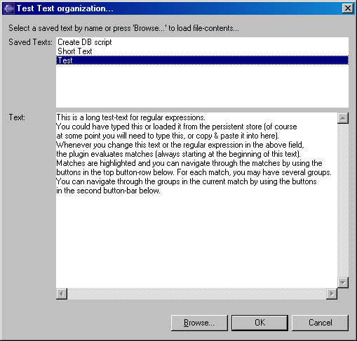

You can save useful regular expressions and test-texts for later reference. All persisted data is held in the so-called plugin-content-area in Eclipse which is found as a folder with the plugin-id as name under the path (Workspace)/.metadata/.plugins. The QuickREx-plugin generates two .xml-files, regularExpressions.xml and testTexts.xml, which hold the persisted regular expressions and test-texts.
To keep the current regular expression for later reference, simply press the button 'Keep Regular Expression' in the cool-bar or select the entry from the drop-down menu (see above) with the regular expression entered into the reg.-exp.-field. This will add the current String to the list of regular expressions available in the regular-expression combo. Once the plugin is deactivated by the workbench, this list is persisted into the file mentioned above.
To load a previous regular expression, simply select it in the regular-expression combo list.
To delete saved regular expressions from the list, use the drop-down menu of the view (see above). This offers an action 'Organize Reg. Exp.s...'.
A dialog will open, displaying the list of currently saved regular expressions. Select the expression(s) to delete and press the 'Delete'-button in the dialog. When you are done, press 'Close'.
To keep the current test-text for later reference, press the button 'Save Test-Text' in the cool-bar or select the entry from the drop-down menu (see above). A dialog opens, displaying the current text and asking for a name. Enter a name and press 'OK'. If the name is already in use, a message will inform you about this fact when the name is entered. If you still press 'OK', the old text is overwritten with the current text.
To load a previous test-text or the contents of a file, press the button 'Load Test-Text' in the cool-bar or select the entry from the drop-down menu (see above). A dialog lets you select the name of the test-text to load or read the contents of a file on the file-system.
To load a previously saved text, select the name of the text to load from the list. The saved text is displayed in the dialog for reference (see below). Pressing 'OK' loads the selected text into the test-text field.
To load the contents of a file on the file-system, press 'Browse...' and find the file in the file-selection dialog. When closing the dialog with a file selected, the contents of the file are displayed in the field 'Text'. Pressing 'OK' closes the organize-dialog and loads the file-contents in to the test-text field. Note that the test-text-contents are no longer linked with the file-contents, i.e. changing any one will not change the other.
To delete saved test-texts, use the drop-down menu of the view (see above). This offers an action 'Organize Test-Texts...'.
A dialog similar to the one above will open, where the 'OK' button is replaced by a 'Delete' button and the 'Cancel' button is replaced by a 'Close' button. Select the name of the test-text to be deleted and click 'Delete'. A message informs you that the text has been deleted and the list is refreshed. To close the dialog, use the corresponding button.